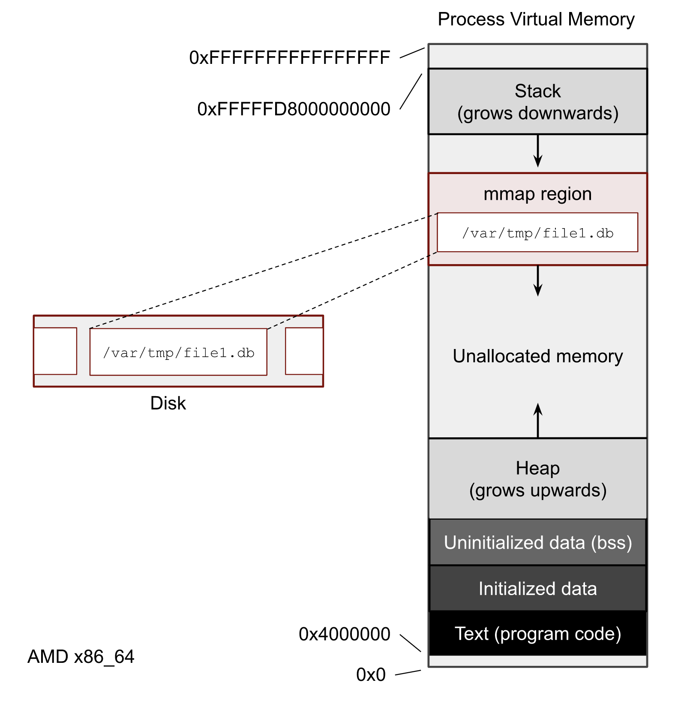

More about mmap() file access
#
Before we start the cgroup chapter, where I’m showing how to leverage memory and IO limits in order to control Page Cache eviction and improve reliability of services, I want to delve a bit deeper into mmap() syscall. We need to understand what is happening under the hood and shed more light on the process of reading and writing with mmap().
mmap() overview
#
Memory mapping is one of the most interesting features of the Linux systems. One of its features is the ability for software developers to transparently work with files whose size exceeds the actual physical memory of the system. In the image below, you can see what the Virtual Memory of a process looks like. Each process has it’s own region where mmap() maps files.

What I’m not touching here is whether to use mmap() or file syscalls like read() and write() in your software. What is better, faster or safer to use is beyond the scope of this post. But you definitely need to understand how to get the mmap() stats, because almost every Page Cache user-space tool uses it.
Let’s write one more script with mmap(). It prints a PID of the process, maps the test file and sleeps. The sleep time should be enoughs to play with the process.
import mmap
import os
from time import sleep
print("pid:", os.getpid())
with open("/var/tmp/file1.db", "rb") as f:
with mmap.mmap(f.fileno(), 0, prot=mmap.PROT_READ) as mm:f
sleep(10000)
Run it in the one terminal window and in the another one run pmap -x PID with the PID of the script.
pmap -x 369029 | less
where 369029 is my PID.
The output of the pmap shows us all contiguous virtual memory areas (VMA or struct vm_area_struct) of the process. We can determine the virtual addresses of the mmaped test file file1.db. In my case:
Address Kbytes RSS Dirty Mode Mapping
...
00007f705cc12000 131072 0 0 r--s- file1.db
We can see that we have 0 dirty pages for the file (it only shows the dirty pages of this process). The RSS column equals to 0, which tells us how much memory in KiB our process has already referenced. This 0, by the way, doesn’t mean that there is no pages of the file in Page Cache. It means that our process hasn’t accessed any pages yet.
NOTE
pmapcan display even more detailed output with-XX. Without-XXit uses/proc/pid/maps, but for the extended mode it shows stats from/proc/pid/smaps. More info can be found inman 5 procand kernel documentation filesystems/proc.rst.
So, the most interesting part about mmap() for SRE is how it transparently loads data on accessing and writing. And I’m showing all this in the next chapters.
What is a page fault? #
Before we start talking about file tools, we need to understand the concept of the page faults. Generally speaking the page fault is the CPU mechanism to communicate with the Linux Kernel and its memory subsystem. The page fault is a building block of the Virtual Memory concept and demand paging. Briefly speaking, kernel usually doesn’t allocate physical memory immediately after a memory request is done by mmap() or malloc(). Instead, kernel creates some records it the process’s page table structure and uses it as a storage for its memory promises. In addition, the page table contains extra info for each page, such as memory permissions and page flags (we’ve already seen some of them: LRUs flags, dirty flag, etc).
From the examples in chapter 2, you can see that in order to read mmaped file at any position, the code doesn’t need to perform any seeks (man 2 lseek), unlike with file operations. We can just start reading from or writing to any point of the mapped area. For this reason, when an application wants to access a page the page fault can occur if the target page has not been loaded to Page Cache or there is no connections between the page in the Page Cache and the process' page table.
There are 2 useful for us types of page faults: minor and major. A minor basically means that there will be no disk access in order to fulfill a process’s memory access. And on the other hand a major page fault means that there will be a disk IO operation.
For example, if we load a half of a file with dd in Page Cache and afterward access this first half from a program with mmap(), we will trigger a minor page faults. The kernel doesn’t need to go to disks because this pages were already loaded to Page Cache. The kernel only needs to reference this already loaded pages with the page table entries of the process. But if the process tries to read within the same mmaped area the second half of the file, the kernel will have to go to the disk in order to load the pages and the system will generate major page faults.
If you want get more information about demand paging, Linux kernel and system internals, please watch “Introduction to Memory Management in Linux” video form Embedded Linux Conf.
Let’s make an experiment and write a script with infinitive random read of the file:
import mmap
import os
from random import randint
from time import sleep
with open("/var/tmp/file1.db", "r") as f:
fd = f.fileno()
size = os.stat(fd).st_size
with mmap.mmap(fd, 0, prot=mmap.PROT_READ) as mm:
try:
while True:
pos = randint(0, size-4)
print(mm[pos:pos+4])
sleep(0.05)
except KeyboardInterrupt:
pass
Now we need 3 terminal windows. In the first one:
$ sar -B 1
which shows the system memory statistics per second including page faults.
And in the second one perf trace:
$ sudo perf trace -F maj --no-syscalls
which shows major page faults and corresponding file paths.
Finally in the 3rd terminal window start the above python script:
$ python3 ./mmap_random_read.py
The output should be something closer to the following:
$ sar -B 1
.... LOOK HERE
⬇ ⬇
05:45:55 PM pgpgin/s pgpgout/s fault/s majflt/s pgfree/s pgscank/s pgscand/s pgsteal/s %vmeff
05:45:56 PM 8164.00 0.00 39.00 4.00 5.00 0.00 0.00 0.00 0.00
05:45:57 PM 2604.00 0.00 20.00 1.00 1.00 0.00 0.00 0.00 0.00
05:45:59 PM 5600.00 0.00 22.00 3.00 2.00 0.00 0.00 0.00 0.00
...
Take a look at fault/s and majflt/s fields. They show what I’ve just explained.
And from the perf trace we can get insides about the file where we have major page faults:
$ sudo perf trace -F maj --no-syscalls
...
SCROLL ➡ LOOK HERE
⬇
5278.737 ( 0.000 ms): python3/64915 majfault [__memmove_avx_unaligned_erms+0xab] => /var/tmp/file1.db@0x2aeffb6 (d.)
5329.946 ( 0.000 ms): python3/64915 majfault [__memmove_avx_unaligned_erms+0xab] => /var/tmp/file1.db@0x539b6d9 (d.)
5383.701 ( 0.000 ms): python3/64915 majfault [__memmove_avx_unaligned_erms+0xab] => /var/tmp/file1.db@0xb3dbc7 (d.)
5434.786 ( 0.000 ms): python3/64915 majfault [__memmove_avx_unaligned_erms+0xab] => /var/tmp/file1.db@0x18f7c4f (d.)
...
The cgroup also has per cgroup stats regarding page faults:
$ grep fault /sys/fs/cgroup/user.slice/user-1000.slice/session-3.scope/memory.stat
...
pgfault 53358
pgmajfault 13
...
Subtle MADV_DONT_NEED mmap() feature
#
Now let’s perform another experiment. Stop all scripts and drop all caches:
$ sync; echo 3 | sudo tee /proc/sys/vm/drop_caches
Restart the script with the infinite read and start monitoring per memory area usage of the process:
watch -n 0.1 "grep 'file1' /proc/$pid/smaps -A 24"
You can now see the mmaped area of the file and its info. The reference field should be growing.
In the other window try to evict pages with vmtouch:
vmtouch -e /var/tmp/file1.db
And notice that the stats from the smaps output don’t drop entirely. At the moment when you run the vmtouch -e command the smaps should show you some decrease of memory usage. The question is what happens? Why when we explicitly asks the kernel to evict the file pages by setting the FADVISE_DONT_NEED flag, some of them are still present in Page Cache?
The answer is a little confusing, but very important to understand. If Linux kernel doesn’t have any memory pressure issues, why should it drop pages from Page Cache? There is a high probability that the program will need them in the future. But if you as a software developer is sure that these pages are useless, there is a madvise() and MADV_DONT_NEED flag for that. It informs kernel that it can remove these pages from the corresponding page table and the following vmtouch -e call will successfully be able to expel the file data from Page Cache.
In case of the memory pressure situation, the kernel will start reclaiming memory from inactive LRU lists. Which means eventually it can drop these pages if they are good candidates for reclaiming.
Read next chapter →